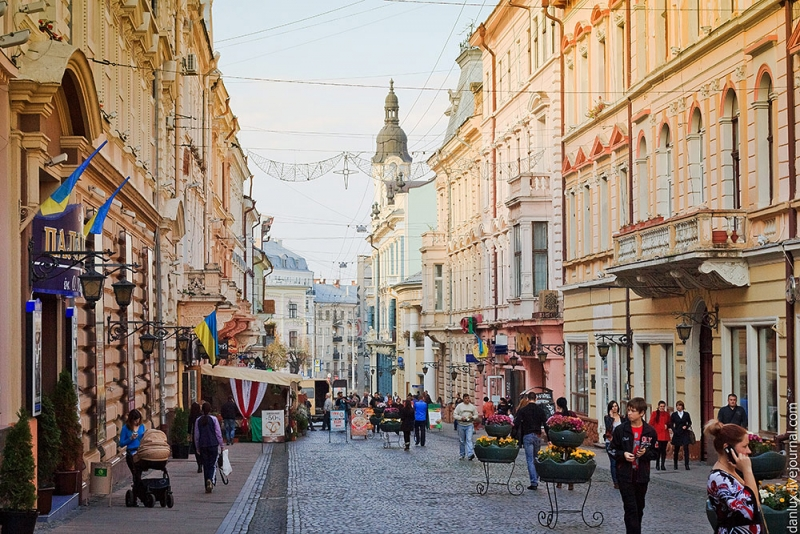

Місце народження: 7 березня, 2005 року, м. Київ
Освіта: ЗЗСО №200, м. Київ;
НТУУ "КПІ", м. Київ
Хобі:
Улюблені книжки:
Чернівці́ — місто в Україні, адміністративний, політичний і релігійний центр Чернівецької області, важливий культурний та науково-освітній осередок України. Місто розміщене на південному заході України за 40 км від румунського кордону.
Давньоруський період (X-XIII ст.) — Заснування міста в межах Київської Русі як фортеці на р. Прут для охорони торгових шляхів. Зруйноване монголами у XIII ст.
Молдавсько-турецький період (XIV ст. – 1774 рр.) — У XIV ст. місто входить до складу Молдовського князівства, а з 1538 р. потрапляє під контроль Османської імперії.
Австрійський період (1775 – 1918 рр.) — Місто стає частиною Австрійської імперії, перетворюючись на важливий економічний та культурний центр Буковини. У цей час Чернівці отримують свій "європейський" вигляд, будуються нові вулиці, відкривається університет.
Румунський період (1918 – 1940 рр.) — Чернівці стають частиною Румунії, зберігаючи свій культурний і економічний розвиток.
Радянський період (1940 – 1991 рр.) — Чернівці переходять до складу Радянської України, місто зростає, але втрачає частину своєї поліетнічної культурної спадщини.
Незалежність України (з 1991 р.) — Місто поступово відновлює свій історичний колорит і архітектурну спадщину.
